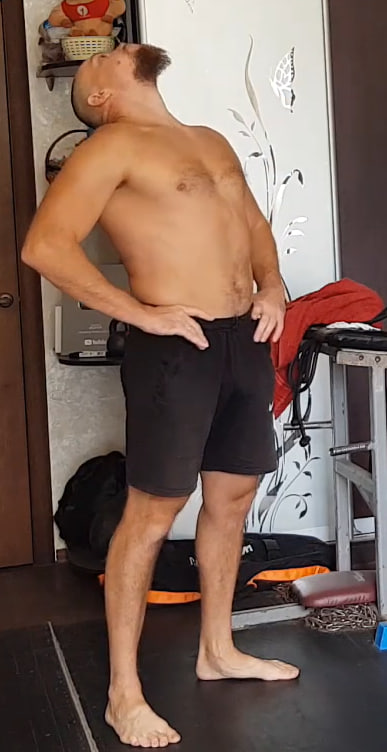

1. Rodar una pelota con la barbilla

Ponte a cuatro apoyos (manos bajo los hombros, rodillas bajo la cadera). Usa una pelota pequeña (ideal: tenis) o un calcetín bien enrollado. Deja delante de ti un espacio libre de aprox. 1,8 m. Apoya suavemente la barbilla sobre el objeto y, moviendo el cuerpo hacia adelante (y si quieres también hacia atrás), haz que el objeto ruede por el suelo. La meta es rodar, no empujar con la mandíbula: mantén el cuello “largo”, la espalda estable y el control.
Русский перевод
Встань на четвереньки (ладони под плечами, колени под тазом). Используй маленький мяч (лучше теннисный) или плотно свернутый носок. Оставь впереди примерно 1,8 м свободного пространства. Мягко поставь подбородок на предмет и, двигая корпус вперед (при желании — и назад), заставляй предмет катиться по полу. Смысл — катить, а не толкать челюстью: держи шею “длинной”, спину стабильной, движение подконтрольным.
2. Elevación frontal con silla en posición de “silla” (10×10 s)


Sujeta una silla estable con ambas manos (por el borde del asiento o por las patas delanteras). Extiende los brazos al frente a la altura del pecho, sin encoger los hombros. Ahora adopta la posición de “silla”: baja como si te sentaras en una silla invisible, con las rodillas cerca de 90°, el peso más en los talones y la espalda recta. Mantén la silla al frente creando tensión en hombros, brazos y zona media.
Ejecución: 10 segundos × 10 veces.
Русский перевод
Возьми устойчивый стул двумя руками (за край сиденья или за передние ножки). Вытяни руки вперёд на уровне груди, не поднимая плечи к ушам. Сядь в позицию “стульчика”: колени примерно 90°, вес больше на пятках, спина прямая. Держи стул перед собой, создавая напряжение в плечах, руках и корпусе.
Выполнение: 10 секунд × 10 раз.
3. Bíceps isométrico a dos brazos (variación “improvisada”)

De pie y firme: gira las muñecas hacia afuera (supinación) y tensa ambos bíceps a la vez como en una pose de culturismo, buscando la contracción máxima. Sin perder tensión, cambia ligeramente el ángulo (altura de codos, apertura de brazos y postura del torso) para “atacar” fibras distintas.
Esta versión a dos brazos simultáneos es una variación improvisada: ahorra tiempo y suele dar un efecto sinérgico (más tensión total y más demanda de control del cuerpo).
Русский перевод
Встань устойчиво. Разверни кисти наружу (супинация) и напряги оба бицепса одновременно, как в позинге, добиваясь максимального сокращения. Не теряя напряжение, слегка меняй угол (высота локтей, раскрытие рук и положение корпуса), чтобы включать разные участки бицепса.
Вариант двумя руками сразу — импровизация: экономит время и даёт синергетический эффект (больше общего напряжения и выше требование к контролю корпуса).
4. Fondos en banco para tríceps con pausa (10×10 s arriba)


Con las manos en el borde de un banco/silla y las piernas extendidas al frente, baja flexionando los codos (codos hacia atrás, hombros abajo) y luego sube sin bloquear los codos por completo. En la parte alta mantén la tensión con los codos ligeramente doblados.
Ejecución: 10 repeticiones, con pausa de 10 s arriba en cada repetición. (Más fácil: rodillas flexionadas.)
Русский перевод
Ладони на край скамьи/стула, ноги вытянуты. Опускайся, сгибая локти (локти назад, плечи опущены), затем поднимайся вверх, не выпрямляя локти до конца. В верхней точке держи напряжение с чуть согнутыми локтями.
Выполнение: 10 повторений, в каждом — пауза 10 сек вверху. (Упрощение: согни колени.)
5. Vises parciales con apoyo en los pies (10×10 s)

Agarra una barra o una estructura firme y segura. No cuelgues todo tu peso: mantén los pies apoyados, dejando parte de la carga en el suelo para proteger la columna y los hombros. Deja que el cuerpo se alargue suavemente y relaja los hombros para crear una tracción controlada en la espalda.
Ejecución: 10 segundos × 10 veces.
Русский перевод
Возьмись за перекладину/прочную опору. Не виси всем весом: держи ноги на опоре, оставляя часть нагрузки на полу — так безопаснее для позвоночника и плеч. Дай телу мягко вытянуться, расслабь плечи и создай контролируемое вытяжение спины.
Выполнение: 10 секунд × 10 раз.
6. Rotura en tres puntos con toalla (3-6-3, 10 ciclos)


Usa una toalla o cinta que no se estire. Enrolla en las muñecas dejando aprox. 46 cm entre manos. Trabaja en tres posiciones: (1) delante del cuerpo, (2) sobre la cabeza, (3) detrás de la espalda. En cada punto: 3 s para entrar en tensión, 6 s de máxima fuerza (como si quisieras romperla), 3 s para soltar.
Ejecución: 10 ciclos (en cada uno pasas por los 3 puntos).
Русский перевод
Возьми полотенце/ремень, который не тянется. Намотай на запястья, оставив ~46 см между руками. Три положения: (1) перед собой, (2) над головой, (3) за спиной. В каждой точке: 3 сек вход в напряжение, 6 сек максимум (как будто реально разорвать), 3 сек плавно отпусти.
Выполнение: 10 циклов (в каждом — все 3 точки).
7. Estiramiento con toalla detrás de la cabeza (10×10 s por lado)

Toma una toalla por detrás de la cabeza: un brazo arriba y el otro abajo. Tira en direcciones opuestas para crear tensión fuerte en la zona de la escápula y dorsal. Cambia de lado.
Ejecución: 10 segundos, descanso corto, 10 veces por lado.
Русский перевод
Возьми полотенце за головой: одна рука сверху, другая снизу. Тяни в противоположные стороны, чтобы создать сильное напряжение в области лопатки/широчайшей. Поменяй руки.
Выполнение: 10 секунд, короткий отдых, 10 раз на каждую сторону.
8. Flexión al suelo (10×10 s)

De pie, baja el torso y estira los brazos hacia el suelo o hacia los pies para alargar isquiotibiales y espalda. Truco: lleva la cadera bien atrás y evita doblarte solo con la espalda. Mantén las rodillas lo más rectas posible (sin dolor).
Ejecución: 10 repeticiones, manteniendo 10 s abajo en cada una.
Русский перевод
Наклоняйся и тянись руками к полу/ступням, растягивая заднюю поверхность ног и спину. Лайфхак: уводи таз максимально назад, не пытайся “сложиться” только спиной. Колени держи максимально прямыми (без боли).
Выполнение: 10 повторений, по 10 сек внизу в каждом.
9.1 Soplar un papel (10 repeticiones)
Toma un trocito de papel ligero frente a la boca. Inhala tranquilo por la nariz y luego sopla para mantener el papel en el aire o en movimiento el mayor tiempo posible. No hagas explosiones: busca un flujo constante y controlado.
Ejecución: 10 soplidos largos (uno por repetición).
Русский перевод
Держи лёгкий кусочек бумаги перед ртом. Спокойный вдох носом — затем выдыхай ровно, чтобы бумажка держалась в воздухе/двигалась как можно дольше. Без рывков: нужен постоянный контролируемый поток.
Выполнение: 10 длинных выдохов.
10. Uddiyana Bandha (versión rápida) — 10 repeticiones


De pie, inclina el torso un poco hacia adelante y apoya las manos por encima de las rodillas. Exhala todo el aire y quédate en apnea con pulmones vacíos. En esa apnea: mete el abdomen hacia dentro y hacia arriba (vacío abdominal), luego relaja y deja que el abdomen salga hacia afuera, sin tomar aire. Alterna meter/soltar varias veces en la misma retención. Luego inhala suave y descansa.
Ejecución: 10 repeticiones (cada apnea cuenta como 1). Importante: estrictamente en ayunas.
Русский перевод
Слегка наклонись вперёд, ладони выше коленей. Полностью выдохни и задержи дыхание на пустых лёгких. На задержке: втягивай живот внутрь и вверх (вакуум), затем отпускай живот наружу, не вдыхая. Чередуй “втянуть/отпустить” несколько раз в рамках одной задержки. Потом мягко вдохни и отдохни.
Выполнение: 10 повторений (1 задержка = 1 повтор). Важно: строго натощак.
11. Zancadas (10 por pierna)

Da un paso largo hacia adelante y baja controlado hasta que la rodilla de atrás quede cerca del suelo. Mantén el torso recto, abdomen firme y la rodilla delantera en la misma dirección que el pie (sin meterse hacia dentro). Empuja con el talón del pie delantero para volver arriba y cambia de pierna.
Ejecución: 10 repeticiones por pierna.
Русский перевод
Сделай широкий шаг вперёд и опускайся подконтрольно, пока заднее колено почти не коснётся пола. Корпус ровно, пресс в тонусе, колено передней ноги смотрит в сторону носка (не заваливается внутрь). Оттолкнись пяткой передней ноги и поменяй ногу.
Выполнение: 10 повторений на каждую ногу.